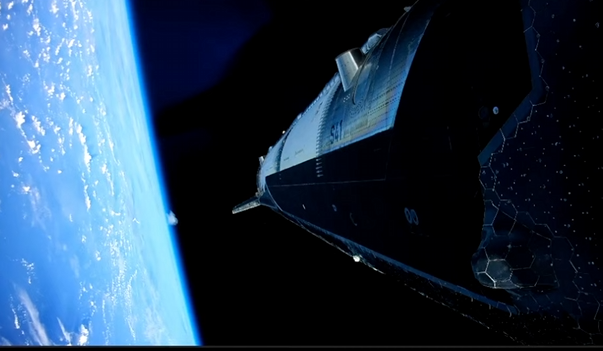
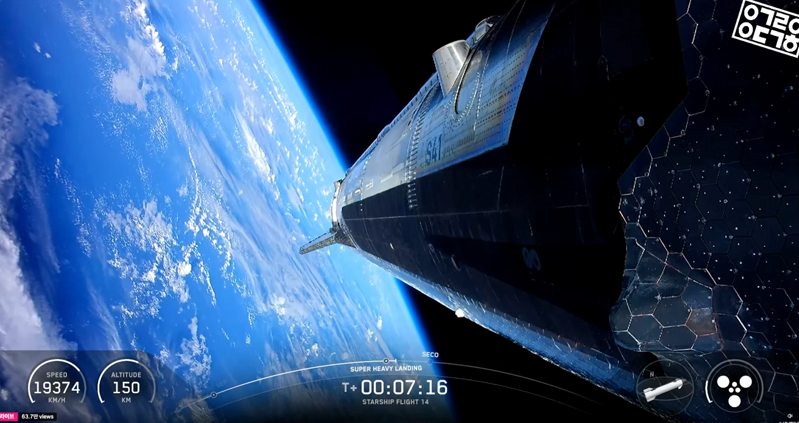
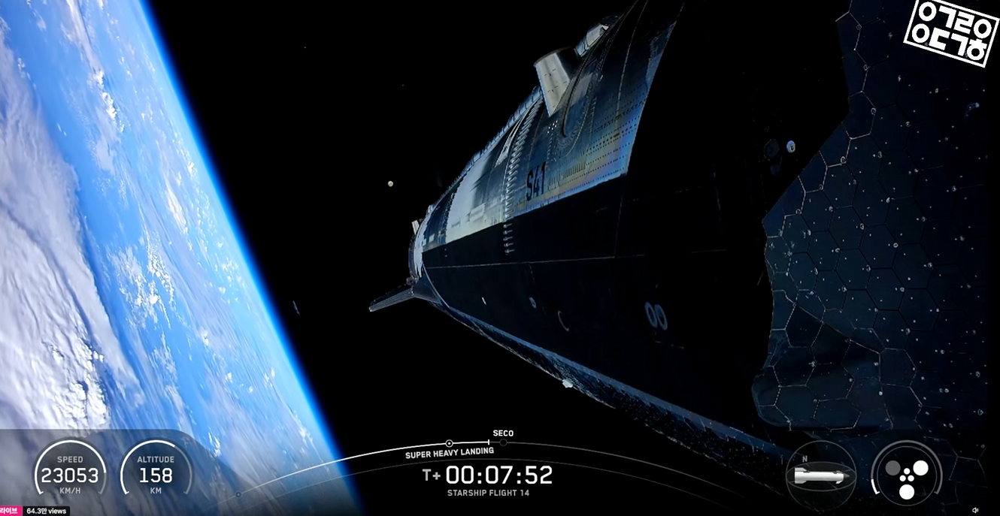
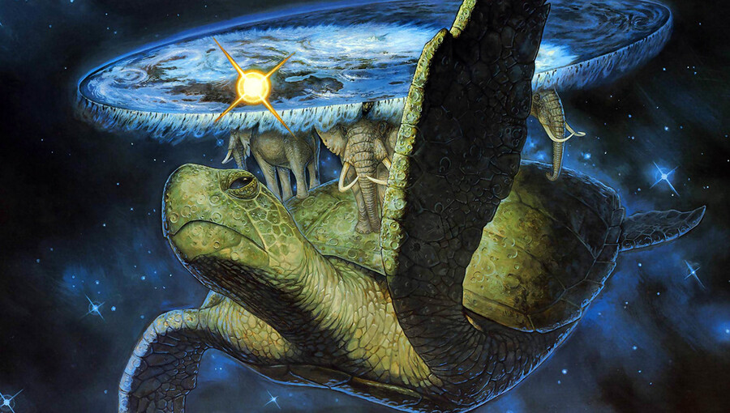

지구 평평함 ㅇㅇ
평평한 지구와
개쩌는 우주킹북이의 파괴광선!!!!!!




지구 평평함 ㅇㅇ
평평한 지구와
개쩌는 우주킹북이의 파괴광선!!!!!!
아 곡률은 평평한 지구의 가장자리에 쓰이는거라고 ㅋㅋㅋㅋㅋ
눈치 드럽게 없네.
평평한 지구가 배워야 하지 않을까?
제 딴엔 유식해 보이려고 썼을 텐데 이 안의 누구보다도 바보 같아보여..
난 다 템플릿으로 보이는데 워딩이 세서 진짠줄 알자나 ㅋㅋㅋㅋ... 진짜냐설마? 아니지?
멍청아 원래 지구는 평평했고 네가 말하는 곡률은 광각렌즈에 의한 왜곡에 불과하단 말이다
유머를 못배운 녀석
찐따 농도 100%
어 그러네
시발 내 이럴줄알았다니까 자 부정해보시지?
자 이제 영상으로 증명됐지? 어떤데 평평단의 승리다
아아 그렇다
지구가 평평하니까 운석맞고 공룡 우주로 날아가는 영상도 있지 동그라면 있겠냐
개쩌는 우주거북이는 왜 안찍힌거임
뒷면에 있는듯;
그분께서는 평시 우주와 동화되어 계시거든!
위기상황이 와서 파괴광선 쏘실때만 실체화함
거북세우스
초은하암흑현무포 ㄷㄷㄷㄷ
얜 그냥 평평하네
놀랍게도 지금까지 관측 가능한 우주의 중심은 지구고
국지적으로 지구가 평평한건 증명된 사실임
게임화면 같네
킹갓우주거북이 지지헙니더
역시
진짜 달에 사는 사람 입장으로써 너무 답답하다
아머드 태종은 실존한다
뭔 거북이야! 고래라고!!
고래는 아니고 평면으로 치환된 질량중심면일듯
원형판 같은 질량중심면에서 수직으로 연속적으로 시공간이 흘러들어와 중력을 형성하여 지표면이 판 위에 고정되고 대기권 밖으로 나가면 그 공간은 나팔모양으로 뻗어서 돔을 형성하는데 그 끝이 관측가능한 우주이고 그 사이에 있는것들이 바로 은하 거대 구조체. 질량 중심면 즉 판경계에서 관측가능한 우즈 끝 테두리 연장선 사이에 있는 빈 판의 영역에서도 수직으로 중력이 적용되지만, 우리가 사는 판인 지'면'이 있는 곳의 중력편차는 어느정도 일정밤위 내인 것이 지면판(질량중심면)을 벗어나서 멀어지먼 그 중력의 힘이 기하급주적으로 작아져서 지면 끝으로 가면 떨어지는게 아니라 두둥실 떠나니게 됨. 질얄 중심면과 구의 밑바닥을 형성하는 면은 거의 같은 면에 있다해도 무방하지만 지면과 돔테두리 사이의 도넛형태의 면은 인간이 발을 딛을 경우 질량 중심면과 같은 작용 면을 넘어서서 평행우주로 갈 수도 있지만 이론상 그런거고 우주구조체의 밑바닥은 인간이 닿을수 없는 강한 반발력이 작용하여 주변의.빛과 중력이 왜곡되어 바닥없는 무한한 공간에 떠 있는 착각을 불러일으키게 됨 그래서 지면이 구 형태라고 착각하여 지면을 지구라고 부르는 이들이 있는데 과학적으로 말도 안되는 아씨발 이게 무슨뇌절이냐.

오염됐다!
곡률이란걸 못배운 새끼들이란...